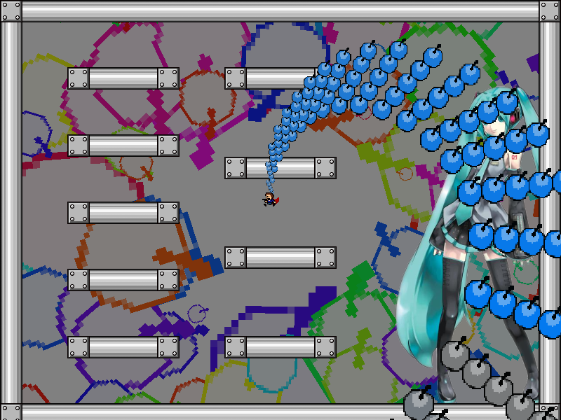
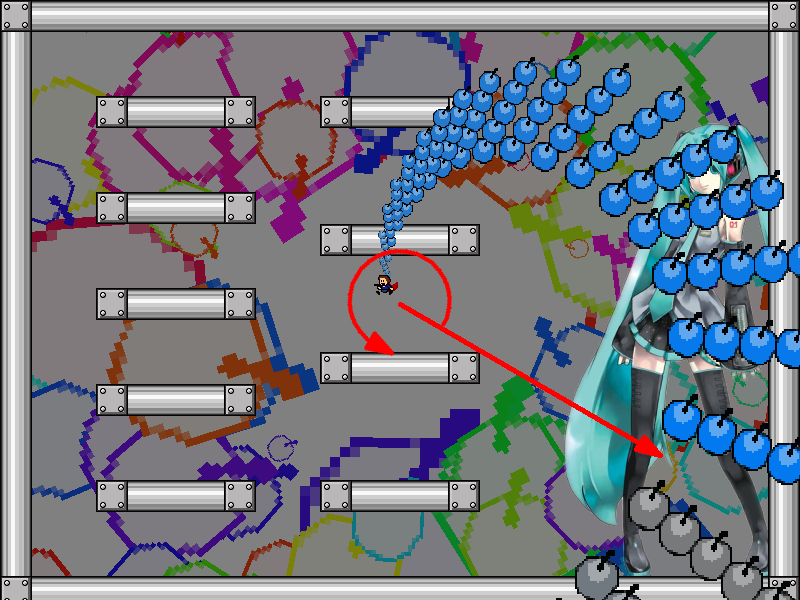
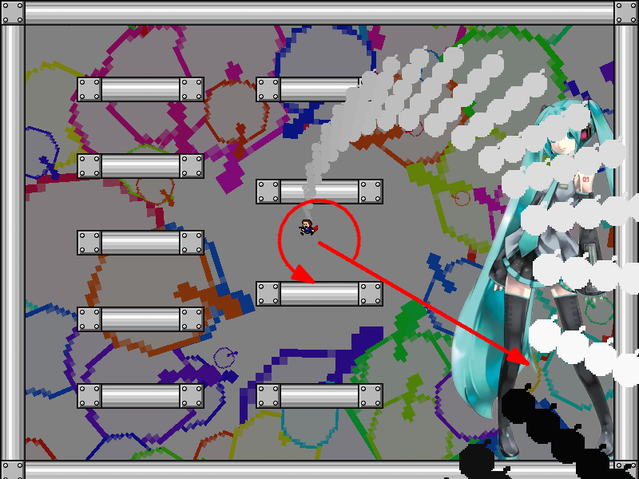
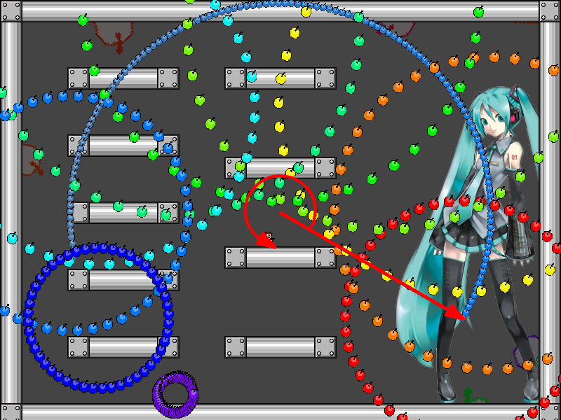
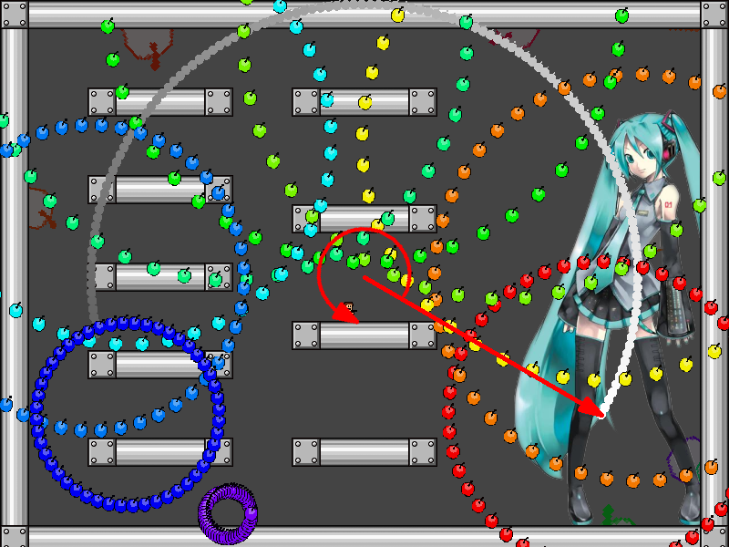
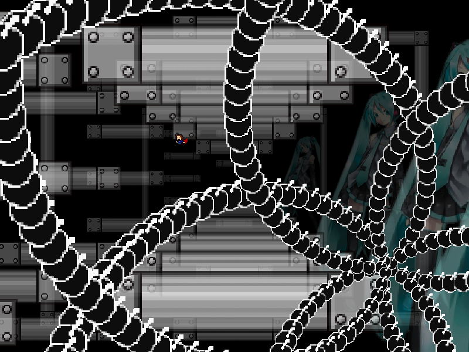

| creator | segment | label | jump |
|---|---|---|---|
| NN | 0:24.10~0:26.98 | Q+R*A | double |
彩度および明度を題材とした角度と回転方向がランダムな弾幕です。
このセクションにおいては、画面中央からみた角度に対して彩度または明度が紐づけられており、0:24.10~0:24.90において画面中央から生成される自機狙い弾幕についてもそれに従っています（fig.2-6.1.a, fig.2-6.1.b）。
なお、これらの自機狙い弾幕については生成から5stepが経過するまでは当たり判定が存在しません。


画面中央からみた角度に関して、紐づけられた彩度または明度が最も高い角度と最も低い角度の間に境目が存在し、その角度上に0:25.30において生成される円形弾幕の中心（回転の始点）が存在します。
回転の始点に対して、2つ目以降に生成される円形弾幕の中心が存在する方向（回転方向）は彩度または明度が低くなる方向に対応しています（fig.2-6.2.a, fig.2-6.2.b）。
画面中央から生成される自機狙い弾幕を適切に誘導し、回転の始点および回転方向を見極めることを目的としています。


また、0:26.40において生成される黒色の螺旋状弾幕については、その中心と角度が回転の始点にを基準として決定されます（fig.2-6.3）。
